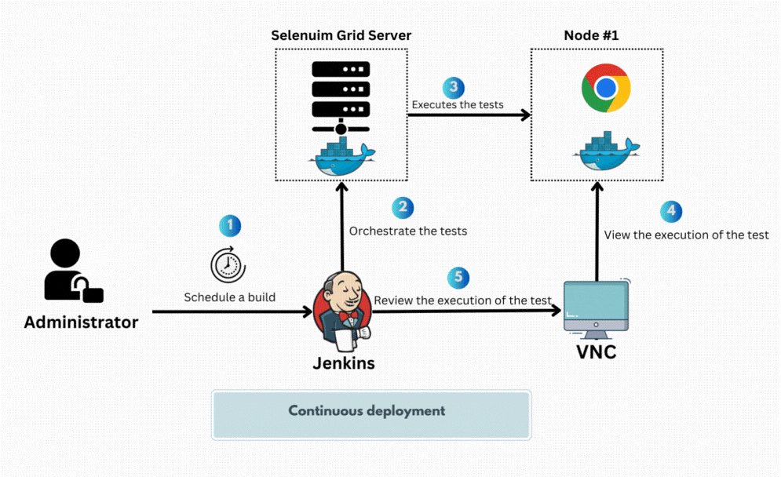
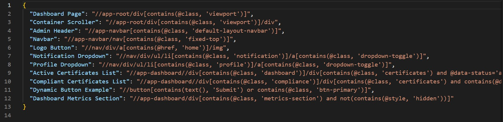
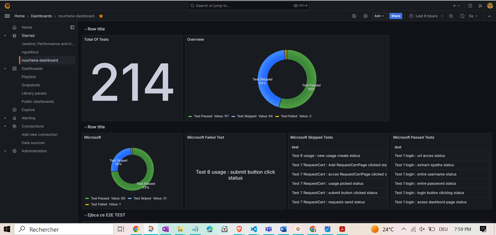
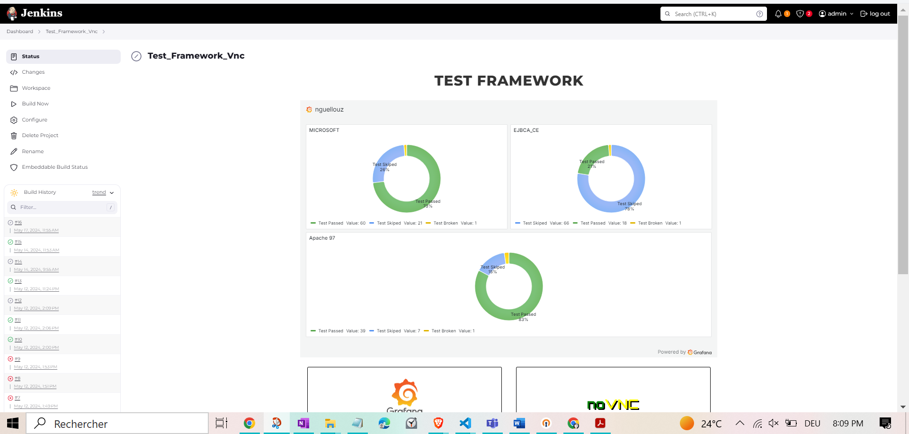
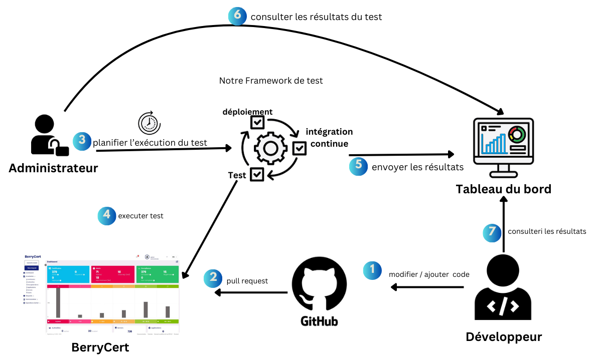
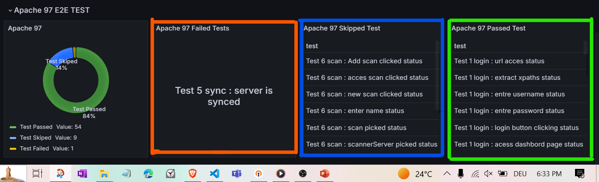
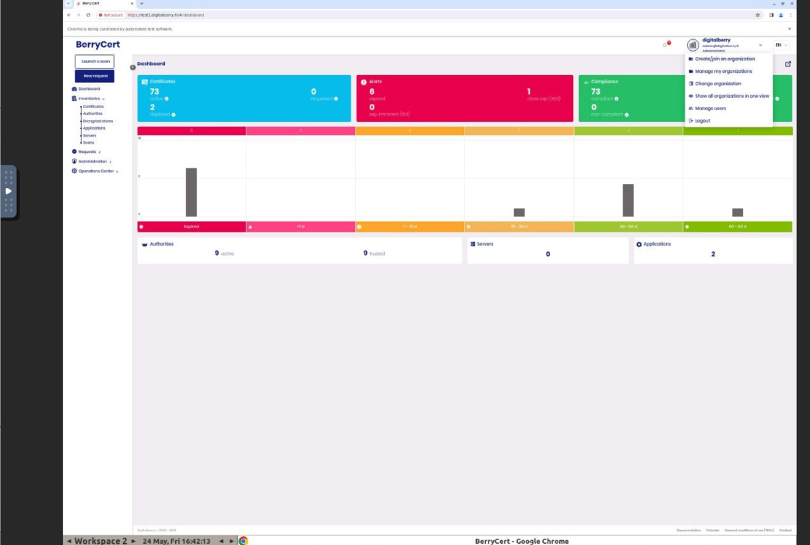

Project Overview
This project was carried out as part of my PFE (Projet de Fin d'Études) internship at DigitalBerry. It involved the automation and optimization of processes for their application, BerryCert, using modern tools and techniques to enhance efficiency and reliability.
Key Responsibilities
- Developed a data analysis framework using Python to automate test results for the BerryCert application.
- Implemented real-time data visualization and performance monitoring with Grafana, enabling effective decision-making based on key metrics.
- Designed and optimized advanced algorithms to extract and analyze data from HTML structures, improving analysis accuracy by 40%.
- Automated data collection and processing workflows using Jenkins and Docker, reducing manual interventions by 30% and increasing pipeline efficiency.
- Utilized Prometheus for performance monitoring and log analysis, ensuring optimal resource management and critical data insight generation.
- Structured and managed data with PostgreSQL, enhancing accessibility and traceability for advanced analytics.
Technologies Used
- Python
- PostgreSQL
- Jenkins
- Grafana
- Prometheus
- Docker
- Selenium
- JavaScript
Visuals
The following visuals highlight key components and workflows of the project:







